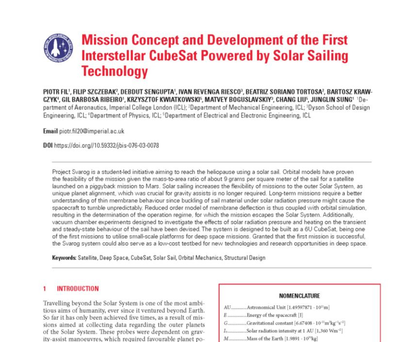
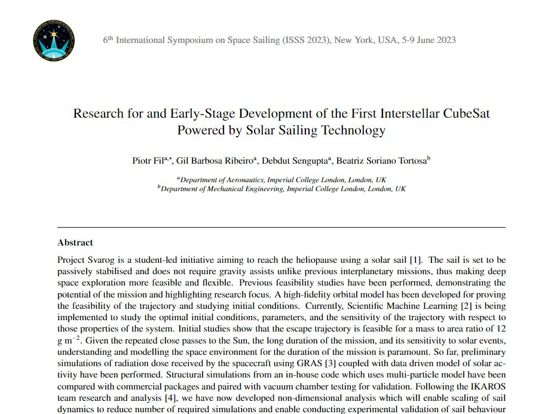
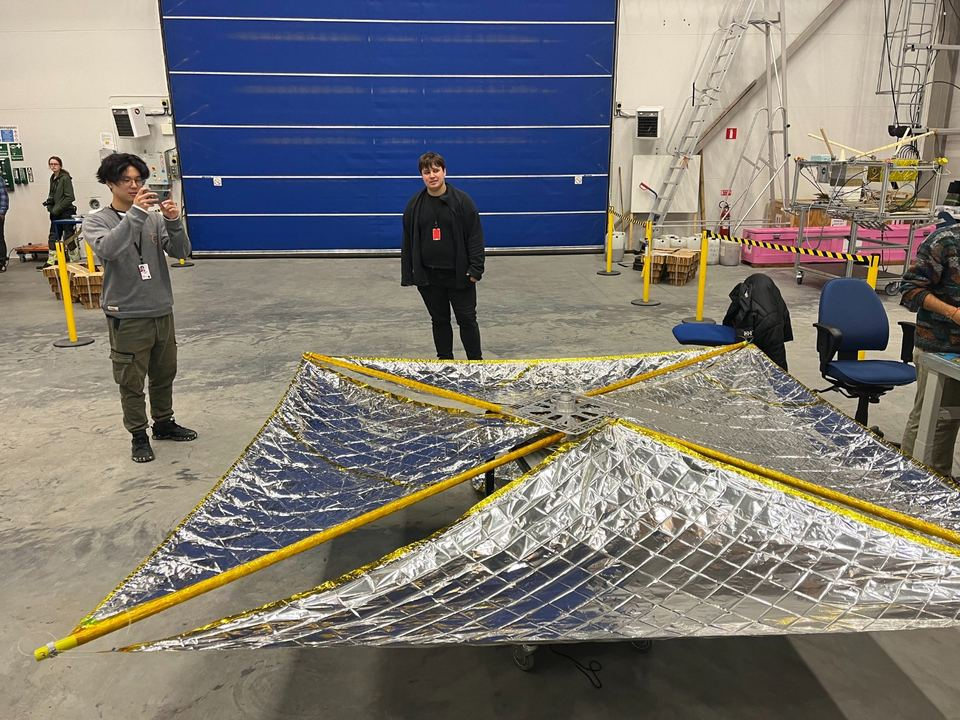
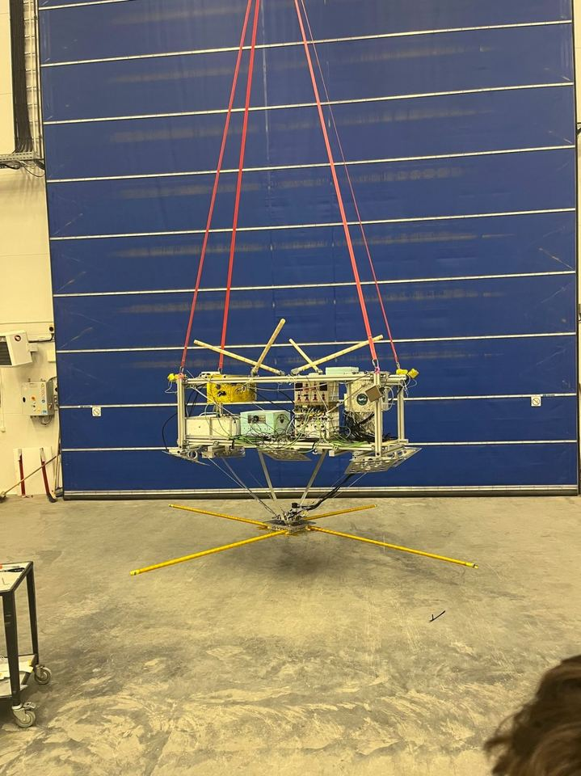
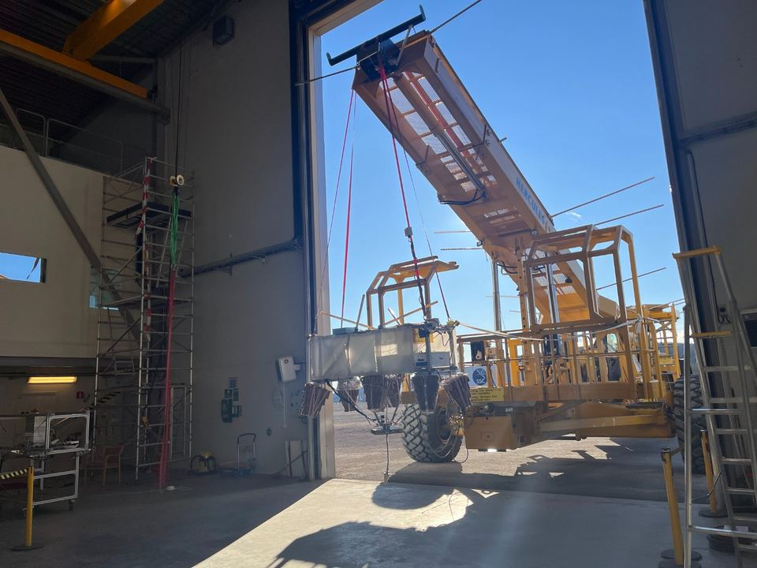
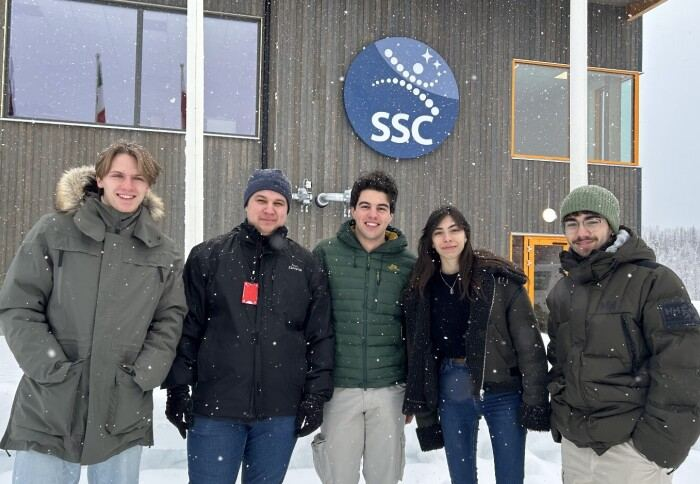
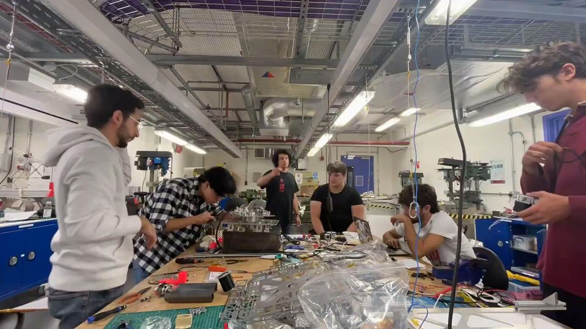

Project Svarog
An interstellar solar sailing CubeSat
Student designed, student built, student tested. We want to get a CubeSat to the edge of the solar system using a solar sail, and be the first student team to do it.
Sail deployment test
Timeline
| 2021 | Project started |
|---|---|
| 2023 | Vacuum chamber testing |
| 2024/25 | Balloon tests on BEXUS (twice!) |
| 2026 | Low Earth Orbit test |
| 2030? | Interstellar launch |
Papers and conferences

Mission Concept and Development of the First Interstellar CubeSat Powered by Solar Sailing Technology

Research for and Early-Stage Development of the First Interstellar CubeSat Powered by Solar Sailing Technology
6th International Symposium on Space Sailing, New York, 2023
We also presented at the First European Interstellar Symposium (Dec 2024), and found a new type of orbit that was previously thought not to be possible. Most of the team got their first publication out of it.
Photos





Teams
- Electronics (PCB design, building the electronics box)
- Orbital simulations
- Mechanical design + testing
- Structural simulations
- Plasma modelling
- Industrial outreach / media
New this year: composites engineer, designing new composite booms for the sails.
We do freshers first, so you'll get given a real bit of the design and manufacturing to own, and we'll help you through it. There are also trips to ESA for testing.
Join
Mondays, 6pm, CAGB 650. Meeting times and rooms get posted in the Svarog group chat in the ICSS WhatsApp community.
Mission lead: Matthew Acevski. Orbital lead: Shiki Vaahan. Instagram: @project_svarog